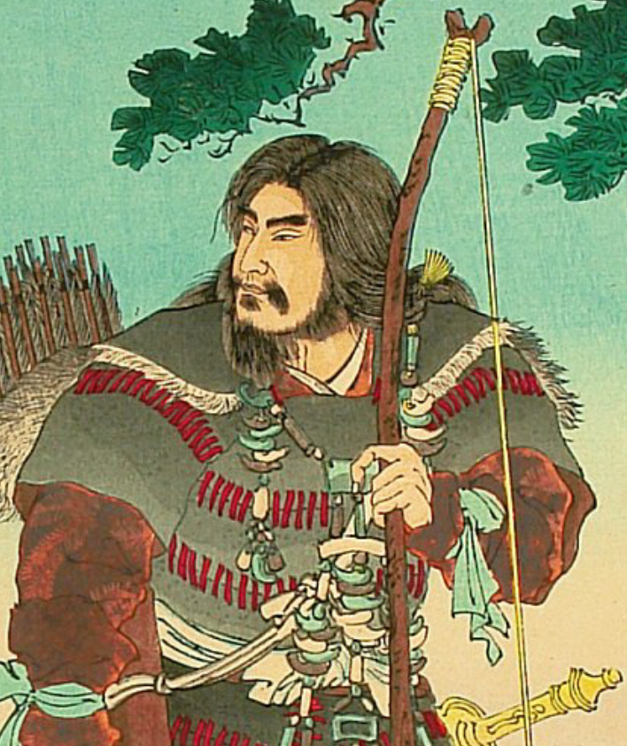

history of japan espanded and evolved during years.
evolution started when first lived the jōmon people, an indegene tribe.
then in the 4th century they becomed invaded by
the Yayoi people, because they where more advanced by using bow and swords.
during the 4th to the 9th centuries, all tribes and kindoms
in Japan united under the emperor of Japan, and the capital,
where the dinasty of emperors lived starting in 794, is the now modern Kioto.

first emperor of Japan
click here for more information about the 3 mayor cities!
this was called the Heian period, which lasted until the 1185. This period was
the golden age of the Japan culture. Because over the following centuries, the
power of the imperial house decreased, passing first to great clans of nobles,
most famous the Fujiwara, and then to the military clans and their armies of samurai.
then there was the Kofun period, when after his life helping to get Japan more advanced, the
famous tomb of the emperor Nintoku was builded.
click here to know more about the tomb!